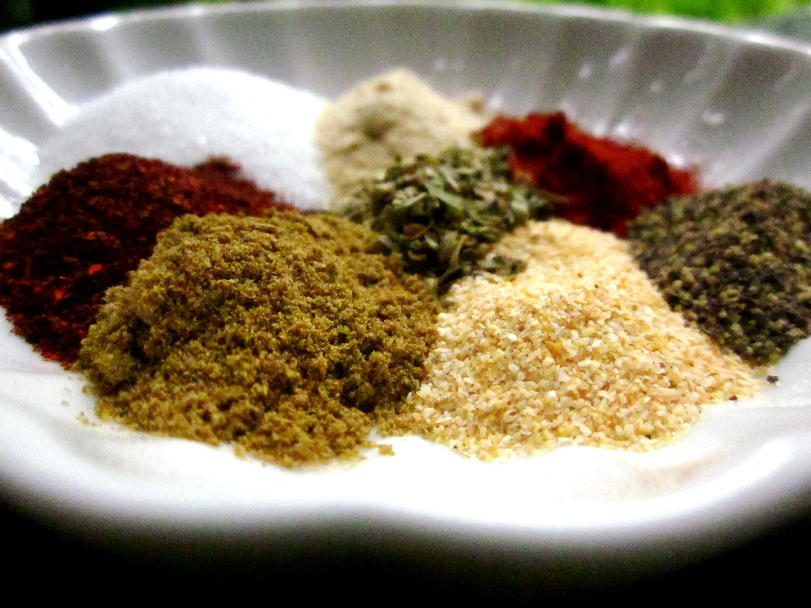

Adobo Seasoning

Description
Servings: 7 tbsp.
Courtesy of Food.com
- 2 tbsp. salt
- 1 tbsp. paprika
- 2 tsp. ground black pepper
- 1 ½ tsp. onion powder
- 1 ½ tsp. dried oregano
- 1 ½ tsp. ground cumin
- 1 tsp. garlic powder
- 1 tsp. chili powder
Directions
- In a bowl, stir together the salt, paprika, black pepper, onion powder, oregano, cumin, garlic powder, and chili powder.
- Store in a sealed jar in a cool, dry place.